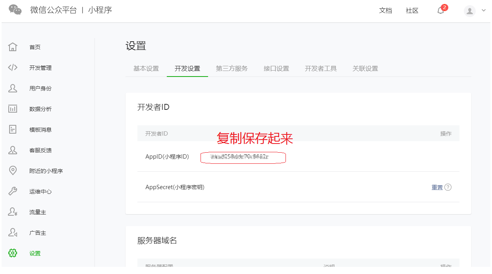
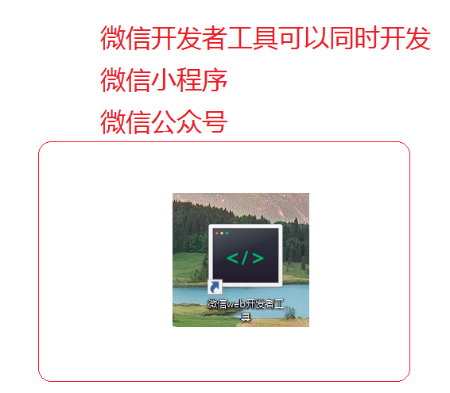
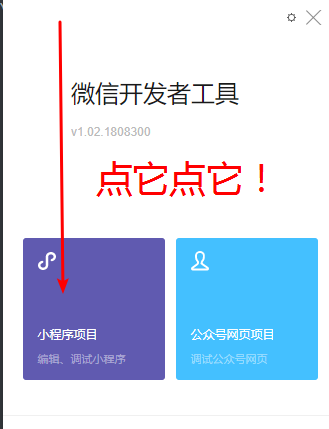
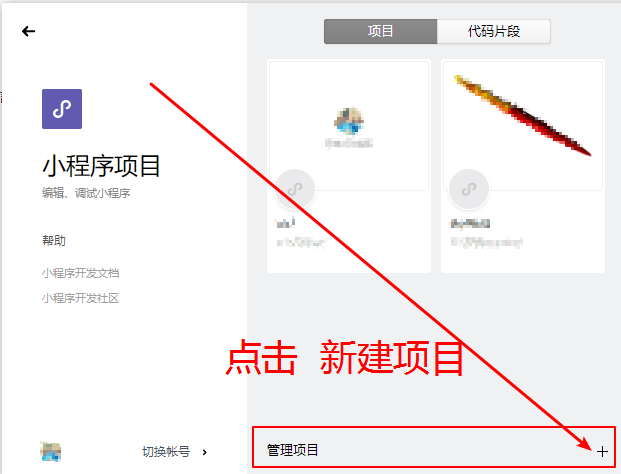
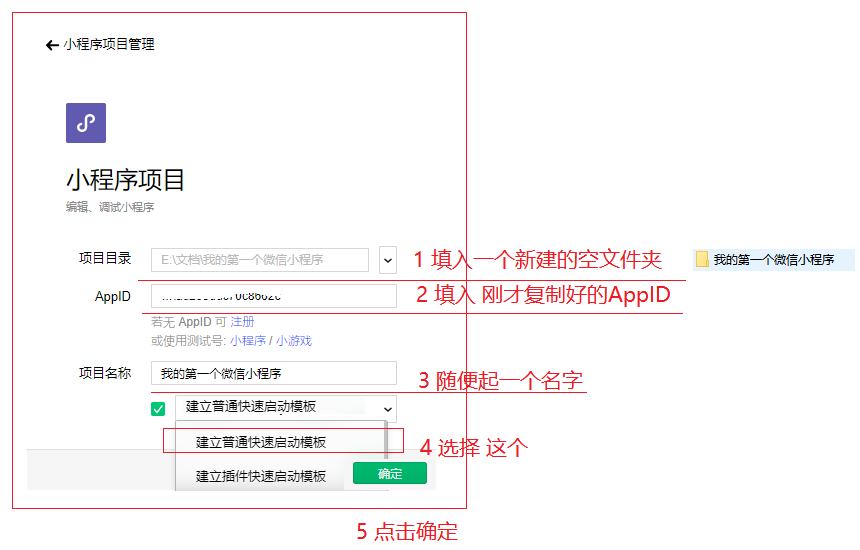
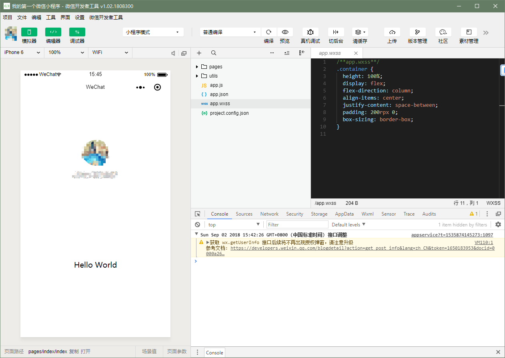
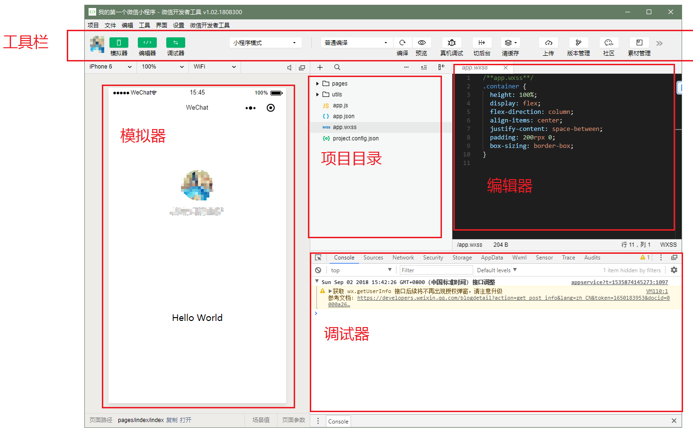
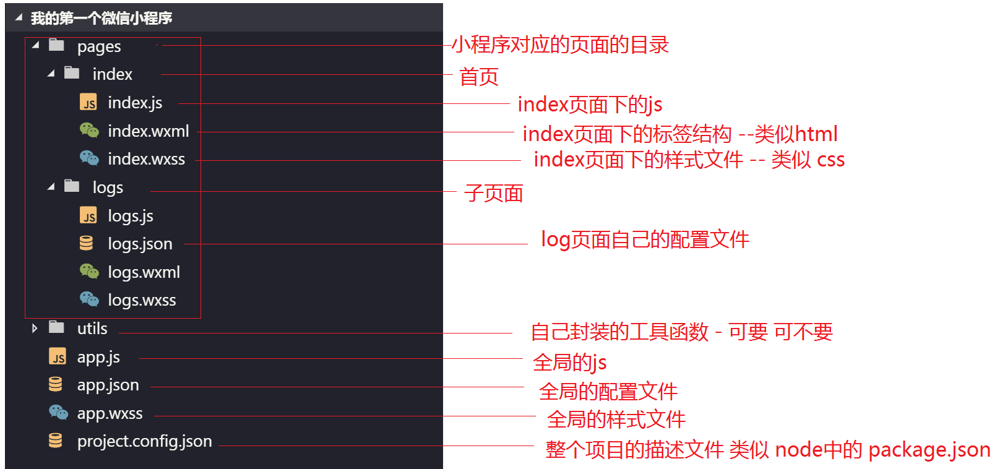

1. 课程介绍
本次课程分为两个部分。
1.1. 微信小程序基础
主要讲解微信小程序的基础使用以及相关概念知识
1.2. bilibili微信小程序
一个基于小程序的bilibili应用，加深对微信小程序基础知识的了解。
2. 小程序介绍
微信小程序是腾讯于2017年1月9日推出的一种不需要下载安装即可在微信平台上使用的应用，主要提供给企业、政府、媒体、其他组织或个人的开发者在微信平台上提供服务。
微信小程序和微信的原生功能应用在本质上是一样的——它们都是Web App。Web App就是一种通过H5页面技术实现的，和Native App的功能和界面几乎一样的手机App形态。很多商家和企业为了节省技术人员和资金的投入，都会选择使用Web App制作工具，免费快速制作自己的Web App。
截止2018年3月，微信小程序用户规模突破4亿，小游戏类微信小程序占比达28%。
2.1. 微信小程序的优势
很多人做微信公众号，而非App，因为App推广成本太高。这导致公众号现在更像是媒体化的平台。微信的本意是要提供服务，所以推出了服务号，但是服务号也没达到预期。微信小程序的优势：
一是微信有海量用户，而且粘性很高，在微信里开发产品更容易触达用户；
二是推广app 或公众号的成本太高。
三是开发适配成本低。
四是容易小规模试错，然后快速迭代。
五是跨平台。
事实上，应用号并非微信首创，之前百度推出过应用号，搜狐推出过快站，但腾讯将这件事情做成功的概率却是最大
2.2. 微信小程序对于创业者的优势
1、APP流量成本的急剧攀升
2、移动互联网格局基本已定，用户主要需求场景已被巨头把持
3、面向所有产品对用户时间的竞争
2.3. 体验

3. 开发环境的准备
3.1. 注册账号
访问注册页面，耐心完成注册即可。
3.2. 获取APPID
由于后期调用微信小程序的接口等功能，需要索取开发者的小程序中的APPID，所以在注册成功后，可登录，然后获取APPID。
登录，成功后可看到如下界面

然后复制你的APPID,悄悄的保存起来，不要给别人看到😄。

3.3. 开发工具
严格来说，微信小程序支持所有的开发工具，但是从效率和便利性来说，推荐如下
4. 我的第一个微信小程序
下面开始演示如何创建我的第一个微信小程序
4.1. 安装微信小程序开发者工具
下载好微信小程序开发者工具后，直接双击安装，一直点击下一步即可。 安装好后，界面如下

4.2. 选择小程序项目

4.3. 新建项目

4.4. 创建项目

4.5. 成功

5. 微信开发工具深入介绍

6. 小程序结构目录
小程序框架的目标是通过尽可能简单、高效的方式让开发者可以在微信中开发具有原生 APP 体验的服务。
小程序框架提供了自己的视图层描述语言 WXML 和 WXSS，以及 JavaScript，并在视图层与逻辑层间提供了数据传输和事件系统，让开发者能够专注于数据与逻辑。
6.1. 小程序文件结构和传统web对比
| 结构 | 传统web | 微信小程序 |
|---|---|---|
| 结构 | HTML | WXML |
| 样式 | CSS | WXSS |
| 逻辑 | Javascript | Javascript |
| 配置 | 无 | JSON |
通过以上对比得出，传统web 是三层结构。而微信小程序 是四层结构，多了一层 配置.json
6.2. 基本的项目目录

7. 配置介绍
一个小程序应用程序会包括最基本的两种配置文件。一种是全局的 app.json 和 页面自己的 page.json
注意：配置文件中不能出现注释
7.1. 全局配置app.json
app.json 是当前小程序的全局配置，包括了小程序的所有页面路径、界面表现、网络超时时间、底部 tab 等。普通快速启动项目里边的 app.json 配置
{
"pages":[
"pages/index/index",
"pages/logs/logs"
],
"window":{
"backgroundTextStyle":"light",
"navigationBarBackgroundColor": "#fff",
"navigationBarTitleText": "WeChat",
"navigationBarTextStyle":"black"
}
}字段的含义
pages字段 —— 用于描述当前小程序所有页面路径，这是为了让微信客户端知道当前你的小程序页面定义在哪个目录。window字段 —— 定义小程序所有页面的顶部背景颜色，文字颜色定义等。- 完整的配置信息请参考 app.json配置
7.2. page.json
这里的 page.json 其实用来表示页面目录下的 page.json 这类和小程序页面相关的配置。
开发者可以独立定义每个页面的一些属性，如顶部颜色、是否允许下拉刷新等等。
页面的配置只能设置 app.json 中部分 window 配置项的内容，页面中配置项会覆盖 app.json 的 window 中相同的配置项。
| 属性 | 类型 | 默认值 | 描述 |
|---|---|---|---|
| navigationBarBackgroundColor | HexColor | #000000 | 导航栏背景颜色，如 #000000 |
| navigationBarTextStyle | String | white | 导航栏标题颜色，仅支持 black / white |
| navigationBarTitleText | String | 导航栏标题文字内容 | |
| backgroundColor | HexColor | #ffffff | 窗口的背景色 |
| backgroundTextStyle | String | dark | 下拉 loading 的样式，仅支持 dark / light |
| enablePullDownRefresh | Boolean | false | 是否全局开启下拉刷新。 详见 Page.onPullDownRefresh |
| onReachBottomDistance | Number | 50 | 页面上拉触底事件触发时距页面底部距离，单位为px。 详见 Page.onReachBottom |
| disableScroll | Boolean | false | 设置为 true 则页面整体不能上下滚动；只在页面配置中有效，无法在 app.json 中设置该项 |
8. 视图层
WXML（WeiXin Markup Language）是框架设计的一套标签语言，结合基础组件、事件系统，可以构建出页面的结构。
8.1. 数据绑定
8.1.1. 普通写法
<view> {{ message }} </view>Page({
data: {
message: 'Hello MINA!'
}
})8.1.2. 组件属性
<view id="item-{{id}}"> </view>Page({
data: {
id: 0
}
})8.1.3. bool类型
不要直接写 checked=”false”，其计算结果是一个字符串
<checkbox checked="{{false}}"> </checkbox>8.2. 运算
8.2.1. 三元运算
<view hidden="{{flag ? true : false}}"> Hidden </view>8.2.2. 算数运算
<view> {{a + b}} + {{c}} + d </view>Page({
data: {
a: 1,
b: 2,
c: 3
}
})8.2.3. 逻辑判断
<view wx:if="{{length > 5}}"> </view>8.2.4. 字符串运算
<view>{{"hello" + name}}</view>Page({
data:{
name: 'MINA'
}
})8.2.5. 注意
花括号和引号之间如果有空格，将最终被解析成为字符串
8.3. 列表渲染
8.3.1. wx:for
项的变量名默认为 item wx:for-item 可以指定数组当前元素的变量名
下标变量名默认为 index wx:for-index 可以指定数组当前下标的变量名
<view wx:for="{{array}}">
{{index}}: {{item.message}}
</view>Page({
data: {
array: [{
message: 'foo',
}, {
message: 'bar'
}]
}
})8.3.2. wx:for
渲染一个包含多节点的结构块 block最终不会变成真正的dom元素
<block wx:for="{{[1, 2, 3]}}">
<view> {{index}}: </view>
<view> {{item}} </view>
</block>8.3.3. wx:key
提高效率使用的
8.4. 条件渲染
8.4.1. wx:if
在框架中，使用 wx:if="{{condition}}" 来判断是否需要渲染该代码块：
<view wx:if="{{condition}}"> True </view>8.4.2. hidden
<view hidden="{{condition}}"> True </view>类似 wx:if
频繁切换 用 hidden
不常使用 用 wx:if
9. WXSS
WXSS(WeiXin Style Sheets)是一套样式语言，用于描述 WXML 的组件样式。
与 CSS 相比，WXSS 扩展的特性有：
- 尺寸单位
- 样式导入
9.1. 尺寸单位
- rpx（responsive pixel）: 可以根据屏幕宽度进行自适应。规定屏幕宽为750rpx。如在 iPhone6 上，屏幕宽度为375px，共有750个物理像素，则750rpx = 375px = 750物理像素，1rpx = 0.5px = 1物理像素。
| 设备 | rpx换算px (屏幕宽度/750) | px换算rpx (750/屏幕宽度) |
|---|---|---|
| iPhone5 | 1rpx = 0.42px | 1px = 2.34rpx |
| iPhone6 | 1rpx = 0.5px | 1px = 2rpx |
| iPhone6 Plus | 1rpx = 0.552px | 1px = 1.81rpx |
建议： 开发微信小程序时设计师可以用 iPhone6 作为视觉稿的标准。
注意： 在较小的屏幕上不可避免的会有一些毛刺，请在开发时尽量避免这种情况。
9.2. 样式导入
使用@import语句可以导入外联样式表，@import后跟需要导入的外联样式表的相对路径，用;表示语句结束。
示例代码：
/** common.wxss **/
.small-p {
padding:5px;
}/** app.wxss **/
@import "common.wxss";
.middle-p {
padding:15px;
}9.3. 内联样式
框架组件上支持使用 style、class 属性来控制组件的样式。
- style：静态的样式统一写到 class 中。style 接收动态的样式，在运行时会进行解析，请尽量避免将静态的样式写进 style 中，以免影响渲染速度。
<view style="color:{{color}};" />- class：用于指定样式规则，其属性值是样式规则中类选择器名(样式类名)的集合，样式类名不需要带上
.，样式类名之间用空格分隔。
<view class="normal_view" />9.4. 选择器
目前支持的选择器有：
| 选择器 | 样例 | 样例描述 |
|---|---|---|
| .class | .intro |
选择所有拥有 class=”intro” 的组件 |
| #id | #firstname |
选择拥有 id=”firstname” 的组件 |
| element | view |
选择所有 view 组件 |
| element, element | view, checkbox |
选择所有文档的 view 组件和所有的 checkbox 组件 |
| ::after | view::after |
在 view 组件后边插入内容 |
| ::before | view::before |
在 view 组件前边插入内容 |
9.5. 全局样式与局部样式
定义在 app.wxss 中的样式为全局样式，作用于每一个页面。在 page 的 wxss 文件中定义的样式为局部样式，只作用在对应的页面，并会覆盖 app.wxss 中相同的选择器。
10. 基本组件
小程序提供了常用的标签组件用于构建页面
10.1. view
类似 div
| 属性名 | 类型 | 默认值 | 说明 |
|---|---|---|---|
| hover-class | String | none | 指定按下去的样式类。当 hover-class="none" 时，没有点击态效果 |
10.1.1. 代码
<view hover-class="h-class"> 点击我试试 </view> <!-- wxss --> .h-class{ background-color: yellow; }10.2. text
显示普通的文本 text只能嵌套text
| 属性名 | 类型 | 默认值 | 说明 |
|---|---|---|---|
| selectable | Boolean | false | 文本是否可选 |
| decode | Boolean | false | 是否解码 |
10.2.1. 代码
<text selectable="{{false}}" decode="{{false}}"> 普 通 </text>10.3. image
图片标签，image组件默认宽度320px、高度240px
**注意：该标签 其实是 web中的 图片标签 和 背景图片的结合！！！ 并且不支持以前的web中的背景图片的写法！！！ **
| 属性名 | 类型 | 默认值 | 说明 |
|---|---|---|---|
| src | String | 图片资源地址，支持云文件ID（2.2.3起） | |
| mode | String | ‘scaleToFill’ | 图片裁剪、缩放的模式 |
| lazy-load | Boolean | false | 图片懒加载。只针对page与scroll-view下的image有效 |
mode 有效值：
mode 有 13 种模式，其中 4 种是缩放模式，9 种是裁剪模式。
| 模式 | 值 | 说明 |
|---|---|---|
| 缩放 | scaleToFill | 不保持纵横比缩放图片，使图片的宽高完全拉伸至填满 image 元素 |
| 缩放 | aspectFit | 保持纵横比缩放图片，使图片的长边能完全显示出来。 |
| 缩放 | aspectFill | 保持纵横比缩放图片，只保证图片的短边能完全显示出来。 |
| 缩放 | widthFix | 宽度不变，高度自动变化，保持原图宽高比不变 |
| 裁剪 | top | 不缩放图片，只显示图片的顶部区域 |
| 裁剪 | bottom | 不缩放图片，只显示图片的底部区域 |
| 裁剪 | center | 不缩放图片，只显示图片的中间区域 |
| 裁剪 | left | 不缩放图片，只显示图片的左边区域 |
| 裁剪 | right | 不缩放图片，只显示图片的右边区域 |
| 裁剪 | top left | 不缩放图片，只显示图片的左上边区域 |
| 裁剪 | top right | 不缩放图片，只显示图片的右上边区域 |
| 裁剪 | bottom left | 不缩放图片，只显示图片的左下边区域 |
| 裁剪 | bottom right | 不缩放图片，只显示图片的右下边区域 |
10.4. swiper
微信内置有轮播图组件
默认宽度 100% 高度 150px
| 属性名 | 类型 | 默认值 | 说明 |
|---|---|---|---|
| indicator-dots | Boolean | false | 是否显示面板指示点 |
| indicator-color | Color | rgba(0, 0, 0, .3) | 指示点颜色 |
| indicator-active-color | Color | #000000 | 当前选中的指示点颜色 |
| autoplay | Boolean | false | 是否自动切换 |
| interval | Number | 5000 | 自动切换时间间隔 |
| circular | Boolean | false | 是否采用衔接滑动 |
10.4.1. swiper
滑块视图容器。
10.4.2. swiper-item
滑块
默认宽度和高度都是100%
10.5. navigator
导航组件 类似超链接标签
| 属性名 | 类型 | 默认值 | 说明 |
|---|---|---|---|
| target | String | self | 在哪个目标上发生跳转，默认当前小程序，可选值self/miniProgram |
| url | String | 当前小程序内的跳转链接 | |
| open-type | String | navigate | 跳转方式 |
open-type 有效值：
| 值 | 说明 |
|---|---|
| navigate | 保留当前页面，跳转到应用内的某个页面，但是不能跳到 tabbar 页面 |
| redirect | 关闭当前页面，跳转到应用内的某个页面，但是不允许跳转到 tabbar 页面。 |
| switchTab | 跳转到 tabBar 页面，并关闭其他所有非 tabBar 页面 |
| reLaunch | 关闭所有页面，打开到应用内的某个页面 |
| navigateBack | 关闭当前页面，返回上一页面或多级页面。可通过 getCurrentPages() 获取当前的页面栈，决定需要返回几层 |
| exit | 退出小程序，target=”miniProgram”时生效 |
10.6. video
视频。该组件是原生组件，使用时请注意相关限制。
| 属性名 | 类型 | 默认值 | 说明 |
|---|---|---|---|
| src | String | 要播放视频的资源地址，支持云文件ID（2.2.3起） | |
| duration | Number | 指定视频时长 | |
| controls | Boolean | true | 是否显示默认播放控件（播放/暂停按钮、播放进度、时间） |
| autoplay | Boolean | false | 是否自动播放 |
| loop | Boolean | false | 是否循环播放 |
| muted | Boolean | false | 是否静音播放 |
<video src="{{src}}" controls></video>11. 自定义组件
小程序允许我们使用自定义组件的方式来构建页面。
11.1. 创建自定义组件
类似于页面，一个自定义组件由
jsonwxmlwxssjs4个文件组成
11.1.1. 声明组件
首先需要在 json 文件中进行自定义组件声明
{ "component": true}11.1.2. 编辑组件
同时，还要在 wxml 文件中编写组件模板，在 wxss 文件中加入组件样式
注意：在组件wxss中不应使用ID选择器、属性选择器和标签名选择器。
<!-- 这是自定义组件的内部WXML结构 --><view class="inner"> {{innerText}} <slot></slot></view>/* 这里的样式只应用于这个自定义组件 */.inner { color: red;}11.1.3. 注册组件
在自定义组件的 js 文件中，需要使用 Component() 来注册组件，并提供组件的属性定义、内部数据和自定义方法
Component({ properties: { // 这里定义了innerText属性，属性值可以在组件使用时指定 innerText: { type: String, value: 'default value', } }, data: { // 这里是一些组件内部数据 someData: {} }, methods: { // 这里是一个自定义方法 customMethod: function(){} }})11.2. 使用自定义组件
首先要在页面的 json 文件中进行引用声明。还要提供对应的组件名和组件路径
{ // 引用声明 "usingComponents": { // 要使用的组件的名称 // 组件的路径 "component-tag-name": "path/to/the/custom/component" }}下面是项目介绍
1.bilibili项目介绍
通过原生的微信小程序来实现一个 bilibili 应用，来体验原生小程序魅力。
2. 技术铺垫
html和css和JavaScript基本功- 部分
es6 - 微信小程序基础
3. 关键技术
| 名称 | 链接 | 备注 |
|---|---|---|
| 微信小程序 | 开发文档 | 官方文档 |
4. 成果
5. 接口地址
公共路径：https://easy-mock.com/mock/5c1dfd98e8bfa547414a5278/bili
| 接口名称 | 接口路径 | 备注 |
|---|---|---|
| 首页导航 | /navList | |
| 首页轮播图 | /swiperList | |
| 视频列表 | /videosList | |
| 视频详情 | /videoDetail?id | 需要带上视频的id |
| 推荐视频 | /othersList?id | 需要带上视频的id |
| 评论列表 | /commentsList?id | 需要带上视频的id |
免责声明：此笔记来自黑马程序员微信小程序开发笔记，放在这里主要是方便学习使用。获取项目源码课程视频关注微信公众号“51学代码”，回复:【微信小程序】可获得
欢迎关注本站微信公众号“51学代码”